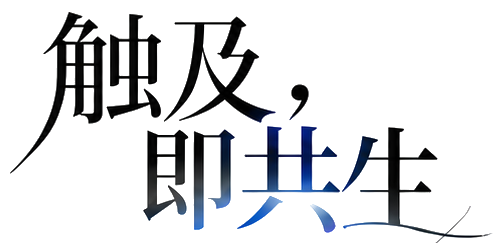

一个问题，展开无限可能。
部分素材未能解码，尚未进入首页。重试

从一次好奇的触碰，走近人工智能的世界。
让这段相遇，以适合你的节奏发生。
键盘：Tab 切换焦点 · 按住空格 / Enter 共鸣 · Esc 关闭面板或返回双手
黑色的手代表人类，白色机械手代表人工智能。一次触碰，打开一段由好奇出发的探索。
画面碎裂之后，进入连续课程图谱，探索十三章主题和交互小实验。完整课程内容仍在设计中。